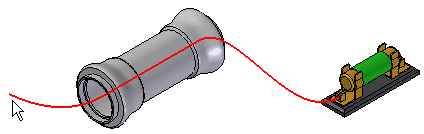
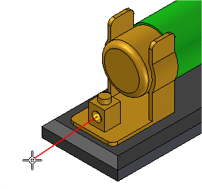
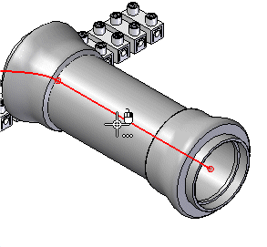
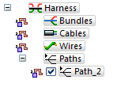
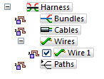
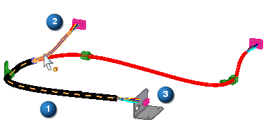
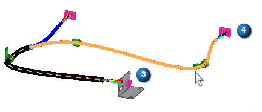

Path command
Path command
Creates a path along which you can place a wire, cable, bundle, or tube.

When creating a path, you can specify a keypoint,

a cylindrical axis,

or a point in space.
The path updates as you move the cursor to define the points of the path.
Once a path is created, it is listed beneath the Paths collector in Assembly PathFinder.

Once you add a conductor to the path, it is moved from the Paths collector to the appropriate PathFinder collector. For example, if you use the path to create a wire, it is moved from the Paths collector to the Wires collector.

If you delete the conductor containing the path, the entry is moved from the conductor collector back to the Paths collector.
Reusing paths
You can reuse path geometry to create wires, cable, and bundles. In the following illustration, a common path (1) is used to create a bundle for wires connected to component 2 and 3.

You can then reuse the same path to create a bundle between component 3 and 4.

If you reuse a path to create a harness feature, associativity between the path and other geometry is maintained.
If you create a bundle that reuses a path that already has wires or cables associated with it, the bundle automatically includes all of the wires and cables in a single bundle.
How do I
Route a harness entity along a surfaceEdit the path of a electrical routing conductor
Construct a path through selected keypoints
Display Properties for a Harness Element
Create a wire
Create a cable
Create a wire harness bundle
Add a splice
Display Harness Elements
Create a harness component solid body
Delete a wire component solid body
Learn more
Creating the electrical routing manuallyCreating harness component solid bodies
Removing conductors
Look up more details
Edit Path CommandPath command bar
Route command
Route along Surface command
Route along Surface command bar
Show All Paths command
Wire command
Wire command bar
Show All Wires command
Hide All Wires command
Wire Properties Command
Cable command
Cable command bar
Show All Cables command
Hide All Cables command
Bundle command
Bundle command bar
Show All Bundles command
Hide All Bundles command
Splice command
Splice command bar
Splice Properties dialog box
Assign Terminals dialog box (Splice)
Create Physical Conductor command
Delete Physical Conductor command
Show Physical Conductor command
Show All Physical Conductors command
Hide Physical Conductor command
Hide All Physical Conductors command
Show All Harnesses command
Hide All Harnesses command
Remove command (Electrical Routing)
PathFinder in electrical routing
Related Topics
Create a bundle across a spliceAdd a wire to a splice
Remove a wire from a splice
Change the splice location
Change splice properties